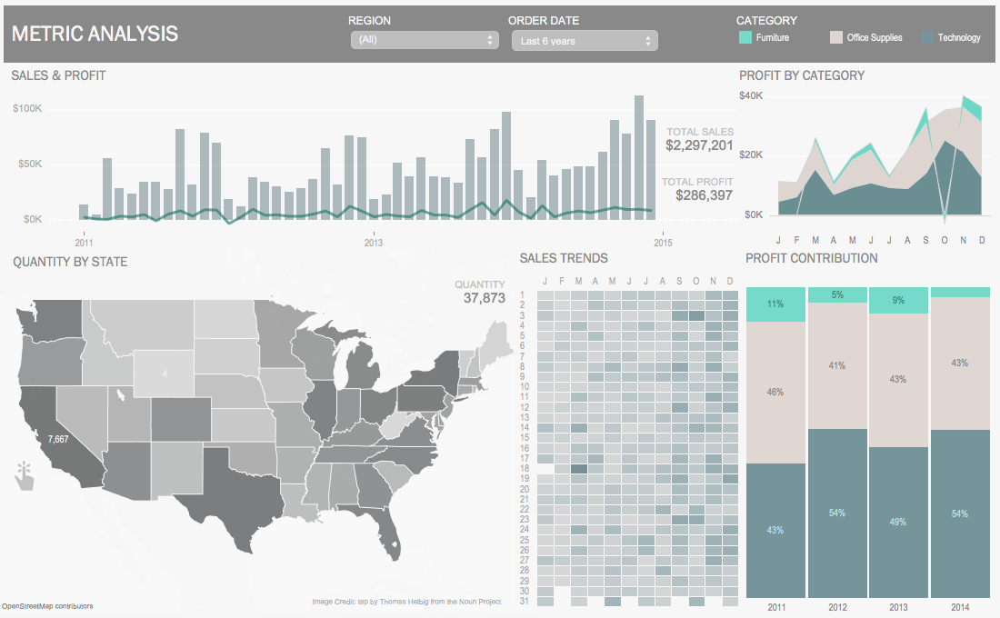

This project showcases my expertise in data cleaning with SQL Server, specifically in the domain of housing sales. I undertook a rigorous data cleansing and preprocessing initiative to refine a complex dataset. Through meticulous data cleaning techniques, I transformed raw, disorganized data into a structured and reliable source of insights.
In this project, I conducted a thorough data exploration of a COVID-19 dataset using SQL Server which demonstrates my proficiency in utilizing SQL Server for in-depth analysis and generating actionable intelligence from complex datasets.

Please check out my Tableau dashboards for projects on Coivd 19, Financial Forecasting, and Weather Patterns.
In this project we look at what variables effect the gross revenue from movies using Jupyter Notebook.
Gathered data from a table on wikipedia to create a csv file.